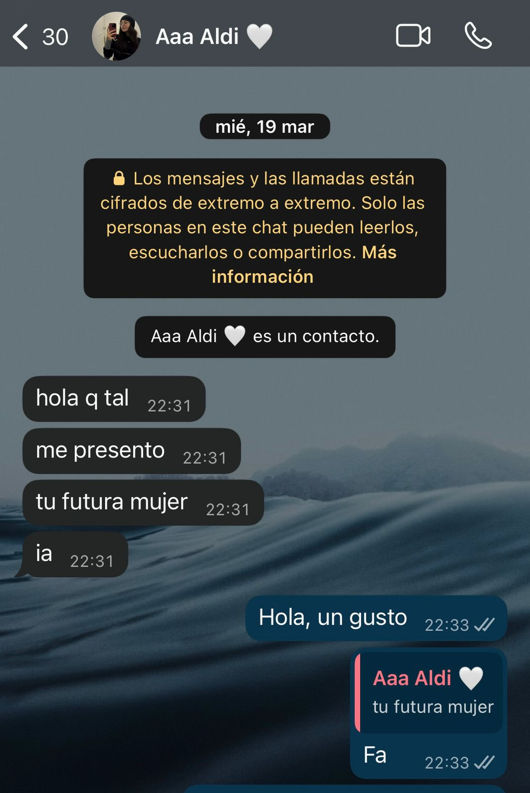

Tengo una pregunta muy frecuente en mi cabeza hace ya varios meses, ¿Por que te amo tanto? la cual sigue sin respuesta logica, por que esto no lleva nada de lógica (mas allá del asesinato de gallinas que hiciste)... Pero si me llevo a pensar en lo que siento por vos, en este amor por vos, en nosotros... ¿ Qué es el amor ? Bueno, primero se que hay distintos tipos de amor, puede ser el amor de un padre a un hijo, entre hermanos, a tu mascotas etc, pero hoy en dia hay un amor que esta en peligro de existinción, que es el amor puro e incondicional por una persona, que en algun momento fue un completo extraño, pero hoy representa un mundo entero, entonces, ¿ que es el amor? Es bancarte los quilombos, la locura y esos momentos donde sentis que el mundo te aplasta y no podes más. No pasa por una calentura, por que a la cama te puede llevar cualquiera, esto, para mi si vale mucho la pena y es super dificil de encontrar en un mundo tán efímero donde todos quieren lo rapido, el placer instantáneo, el goce y ni hablar de la fidelidad. Por que el amor si bien si es goce, tampoco es solamente lo positivo, tambien es sostener al otro, cuando tenes tus caprichos, tus sombras, tus dias malos, esos dias que la vida te pasa por encima y ojo, no digo que yo no los tenga, para nada... entonces alguien que te ama, te respeta, te tolera y te ayuda a salir adelante, trata de que seas una mejor persona. Por que a mi si me importan tus problemas, tu salud, tus metas, como te fue en el dia, tus llamadas y mensajes, como te sentis, que me cuentes las cosas que te hacen sentir mucho y te ilusionan, por eso y mucho mas me importas un monton, y creo que el amor se tiene que nutrir y ser un equilibro de ambos mundos, de la noche y del dia. Bueno, una vez definido lo que es para mi el amor, creo que ahora vas a comprender un poquitito mas cuando te digo que te amo. Por que yo, te amo para siempre Aldi :3. Vos para mi, lo tenes todo, los labios que deseo, la mirada que me mata de amor, la risa que acaricia el alma, el aroma que me enloquece, la piel que me envicia, la alegria que me contagia, los brazos que me hacen confiar y tu amor el cual me hizo volver a creer. Gracias por la persona tan linda que sos, por ayudarme cuando no puedo, por tenerme paciencia por absolutamente todo. Amo tu forma de ser, amo tu locura y tu amor. Ojalá te quedes toda la eternidad, compañera de vida.
 PD: Si llegaste a leer esto, tenes un pedido para retirar en Manina, tenes que pasar 20:30 hs desp de jugar fn :p